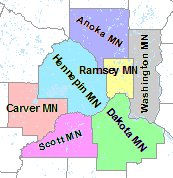
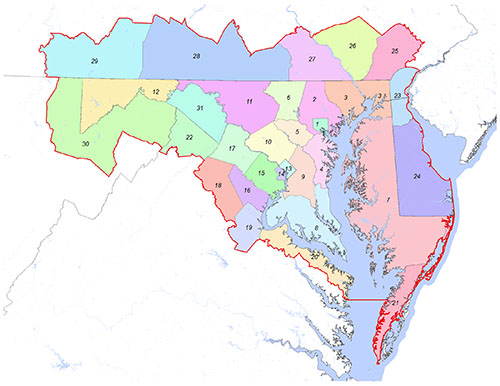
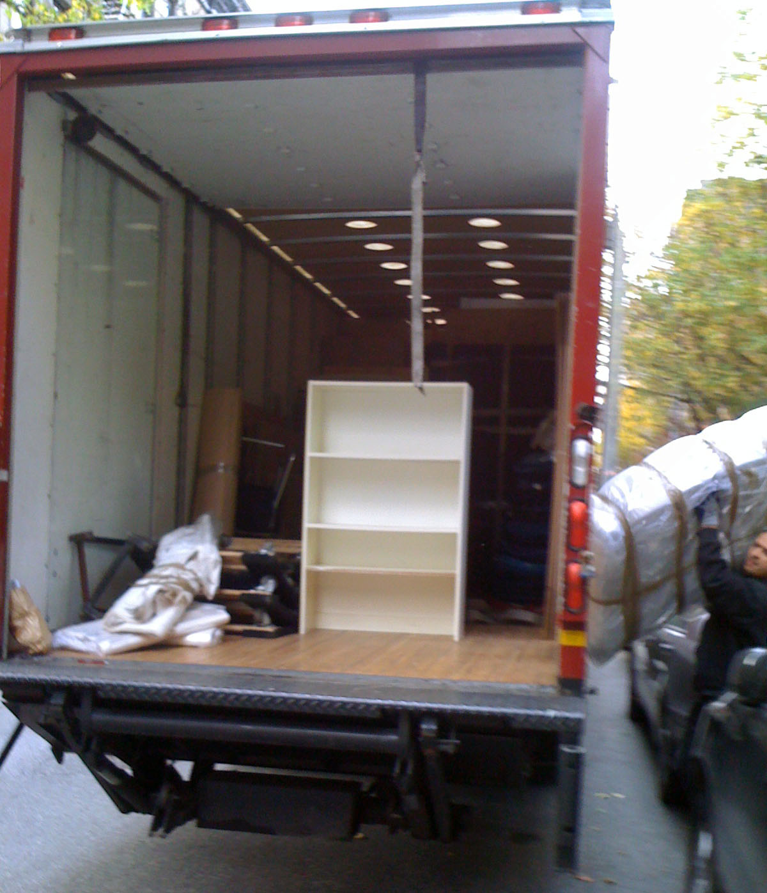

The household relocation module applies logit models to select if and where a household might move. Logit models were developed by T.A. Domencich and D. McFadden (Urban Travel Demand. A behavioural analysis, North-Holland Publishing: 1975) and are particularly strong at modeling urban behavior.
Each household evaluates every simulation period whether it moves or not. Three logit models are applied to simulate a household move:
Every decision is based on utilities that describe how attractive a certain alternative is for a household. Different weights are used for every household type to calculate these utilities.
A binomial logit model is used to make this choice. The logit model is called binomial because only two choice are available, to move or to stay. To make this decision, the household compares the satisfaction with its current housing location with the potential satisfaction at alternative (currently vacant) housing locations. If the household has the prospect to improve substantially, it is likely that it will decide to look for an alternative dwelling.
Logit models are built to simulate the selection between a limited number of alternatives. Choosing between all vacant dwellings in the study would violate this condition. Therefore, a two-step selection was designed for SILO. In this first step, a region is chosen. For SILO's application in Minneapolist/St.Paul, the seven counties were selected as regions.
In SILO's application for Maryland, 31 regions were defined that are an aggregate of counties. Urban counties form regions by themselves, while rural counties were aggregated into larger regions.
Within the chosen region, all vacant dwellings are available to be chosen. The utilities to chose a dwelling are calculated differently for every household type.

Household relocation is simulated with a series of logit models.